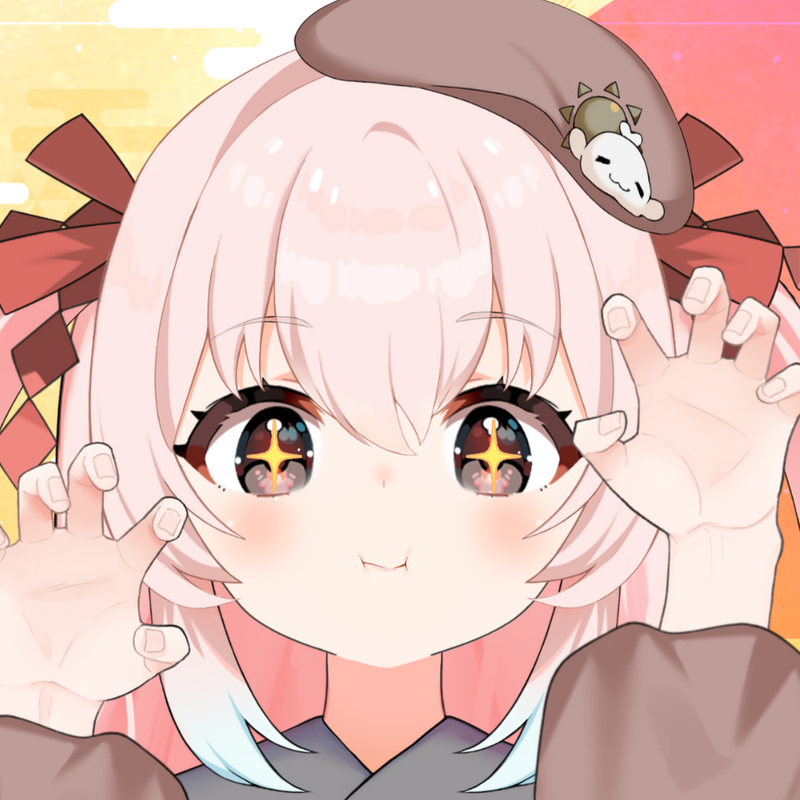

九重紫 -Jiuchong Zi-
自2020年开始在国内外活动活动的虚拟主播（VUP）。
自称向往和平的“动画女孩巫女”。
除联动，商品介绍，企划参与 外，还承接Live2D建模的工作。
如果有什么需求请随时联系我。
个人档案
昵称： ここのゆ、のゆ、ゆ
身高： 152cm
星座： 巨蟹座
生日： 7月22日
性格： 待人柔和、认真、有些胆小、直率的“豆腐心”
萌点： 治愈系、巫女、亚人、病弱、傲娇
粉丝名： 平和族（变态族） / 一家紫 / 紫细胞 / 兵马俑
最珍视的事物： 家人与粉丝（听众）
喜欢的角色： sirotan
主标签： #ここのゆ
同人图标签： #ここのゆああと
画师妈妈： 犬山ななみ / ココナツ / 雲雀ひな / クノオ / 燕小酱
🎨 艺术设计： design
角色设定
几年前因为被来自冥王星的光直击，从人类变成了亚人。现在一边作为 VUP 活动，一边以“代替梦的主人去追寻那些未能实现或被遗忘的梦并予以供养”为生。
我的梦想是：能够变得更加闪耀光芒！
主播轶事
直播内容以游戏直播和杂谈为主，偶尔会唱歌和画画。虽然游戏力不高，特别不擅长FPS还会晕3D，但总是非常努力！
因为懂得很多本土梗被粉丝称为“整活大师”，还因为能熟练吹奏各种神曲的口哨被弹幕赐号“天哨星”~
虽然是个常常发烧的“病弱”体质，但总是坚持带病为大家直播，是个非常宠粉、温柔纯情的“豆腐心”小娘紫哦！
Character Design

← 返回上一页
爱发电/CN
每月更新一次，发布绘画日记和个人拍摄的照片等。
其他礼物或信件的寄送，可以通过fansfer。
可以从海外寄送。
可以送九重的“愿望清单”中的物品。
可以使用PayPal和信用卡进行支付。
销售九重紫的手绘周边商品。
Skeb我可以画一些非常简单的插图，用作头像。
※请先阅读Skeb的规定。
※目前仅接受原创角色或允许代办请求的VTuber的委托。
音频文件出售。
- 恶意编辑和剪辑禁止。
- 禁止篡改视频发言的意图或表达，造成误解的编辑。
- 禁止任何损害九重紫名誉、人格或信誉的编辑。
- 禁止剪辑YouTube的限定公开直播档案。
- 利用素材时请确定使用许可。
- 无法承诺公开的视频会被九重紫宣传或转发。
- 请告知版权拥有者和插图的使用范围（是否允许商业用途、是否适用于活动等）。
- 如果作品包含过度的色情或暴力等敏感内容，可能无法公开或使用。
- 创作者的业绩展示是允许的。
- 请尽量避免给创作者带来困扰。
委托工作 (COMMISSION)
施工中...
关于委托工作
施工中...
联系我
施工中...
关于本站
你好！欢迎来到这里。这是一个由粉丝用爱发电、自发搭建的非官方个人主页。
📝 搭建初衷
作为一名一直关注着九重紫（のゆ）的粉丝，我被她温柔的声音、可爱的性格以及向往和平的“豆腐心”深深打动。为了能让更多人方便地了解她、找到她的各种官方社交媒体和支持渠道，我制作了这个简单的网页。希望能尽自己的一份绵薄之力，让更多人看到正在闪耀光芒的她！
👤 关于我
我只是一名普通的粉丝，如果你也喜欢九重紫，或者对这个网页的排版有什么建议，欢迎来 B站 找我玩：
👉 点击访问我的 Bilibili 个人主页
1. 本网站内所使用的所有美术素材、图片、Logo、背景故事及设定等内容，版权均归主播 九重紫（Kokonoe Yukari） 及其合作画师所有。
2. 本站仅作粉丝安利与导航整理用途，没有任何商业盈利目的。
3. 如果本站的内容有任何侵权或不妥之处，请随时通过上方 B 站链接私信联系我，我会在第一时间配合修改或删除。